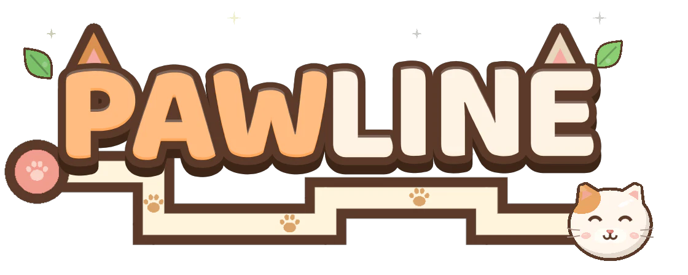
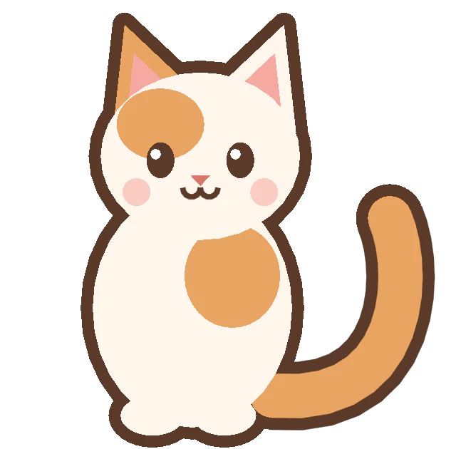
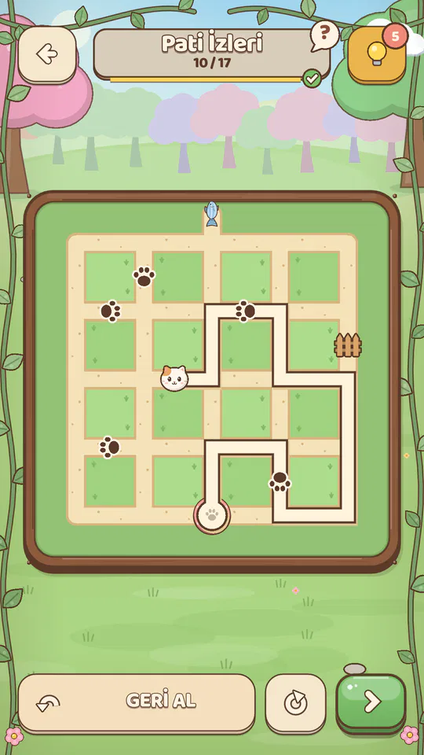
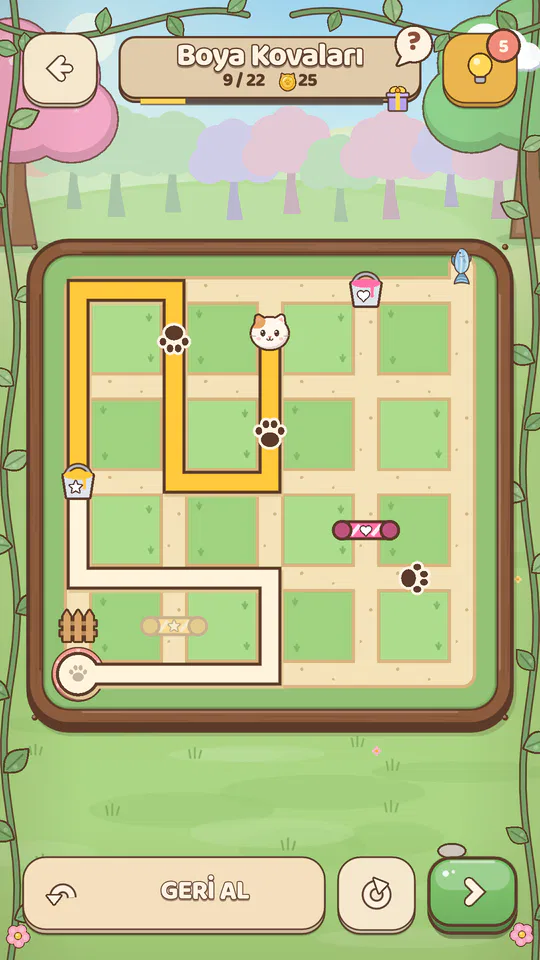
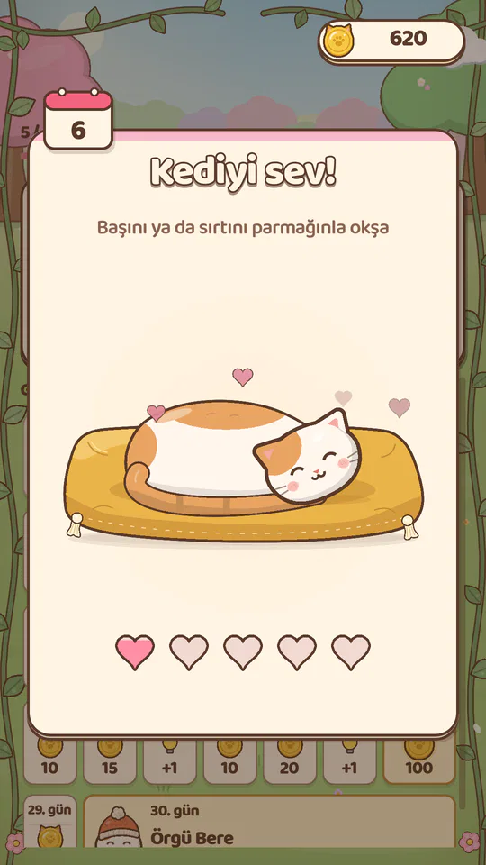
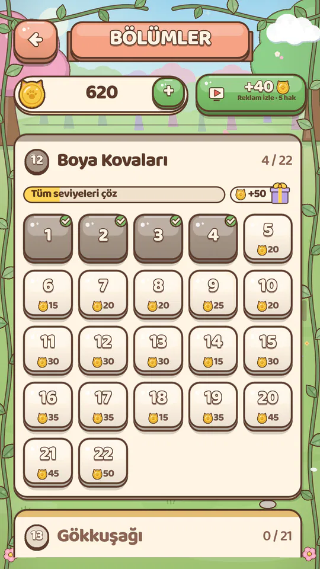
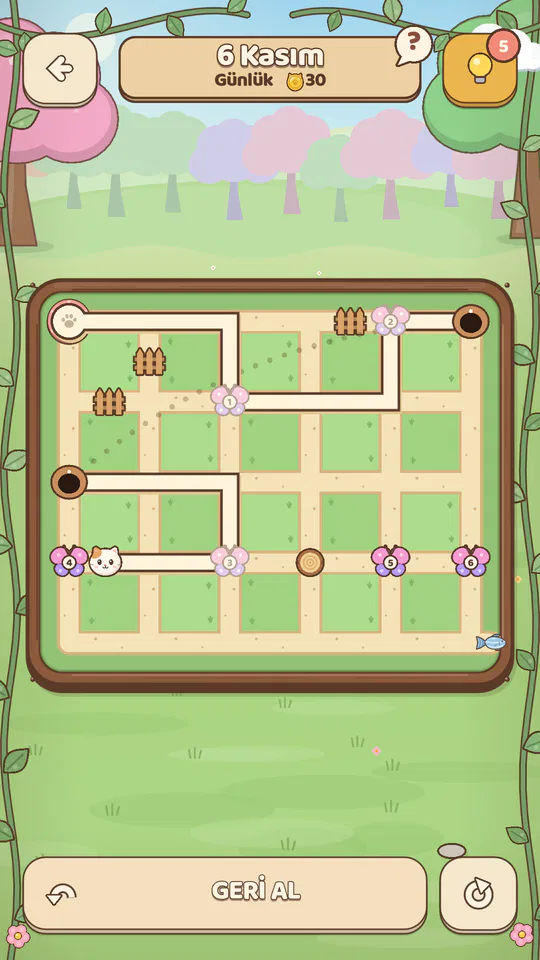
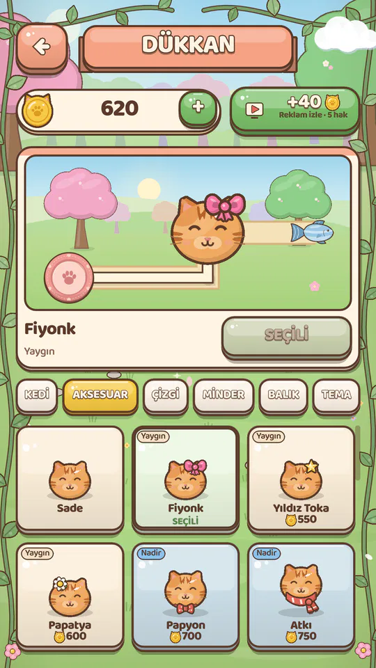
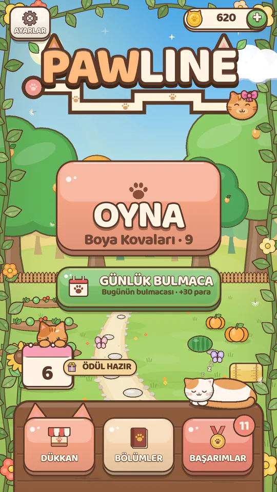

Çizgini çek, kediyi balığa ulaştır! Draw your line, lead the cat to the fish!
Kedi acıkmış, balık da bahçenin öbür ucunda. Parmağınla minderden balığa bir yol çiz, gerisini kedi halleder. Kulağa kolay geliyor, ama her bahçenin kendi kuralları var. The cat is hungry, and the fish is on the other side of the garden. Draw a path from the cushion to the fish and the cat will do the rest. Sounds easy, but every garden has its own rules.
Ücretsiz. Ödüllü reklam ve isteğe bağlı satın alma içerir. Free. Includes rewarded ads and optional purchases.


Nasıl oynanır?How to play
Yeni kuralları kısa örneklerle öğren, ilerledikçe onları birlikte kullan. Learn new rules with short examples, then combine them as you progress.
Çizgini çekDraw your line
Kedi minderinden başla, parmağını kaydır. Çizgi parmağının altında kalır.Start at the cat's cushion and slide your finger. The line stays right under it.
Kuralı keşfetDiscover the rule
Patiler, uyuyan kediler, çiçekler, boya kovaları, fare delikleri... Yanlış yol kırmızı yanıp söner ve sana ipucu verir.Paw prints, sleeping cats, flowers, paint buckets, mouse holes... A wrong path blinks red and gives you a clue.
Balığa ulaşReach the fish
Doğru yolu bulunca kedin koşup balığını afiyetle yer. Sen de kedi parası kazanırsın!Find the right path and your cat dashes off to enjoy its fish. You earn cat coins too!
Bahçeye bir göz atTake a peek
Pastel bahçeler, tahta çitler, uykucu kediler. Aşağıdaki ekranlar güncel oyundan.Pastel gardens, wooden fences and sleepy cats. These screens are from the current game.






İçinde neler var?What's inside
Kısa molalar için de uzun akşamlar için de.For a quick break or a long evening.
500 bulmaca, 25 bölge500 puzzles, 25 regions
Küçük tahtalarda başla, yeni kurallarla ilerle. Bölgeler oyun içinde açılır.Start on small boards and progress through new rules. Regions unlock through play.
Günlük bulmacaDaily puzzle
7. bölgeye ulaşınca açılır. Süre sınırı yok; aynı tarihte herkes aynı bulmacayı çözer. İnternet gerekir.Unlocks when you reach region 7. No time limit; everyone gets the same puzzle on the same date. Requires an internet connection.
Kedi TakvimiCat Calendar
Kedinin başını okşa, günlük ödülünü al. Topladığın günleri pati izleri gösterir; ara verince takvimin sıfırlanmaz.Stroke your cat’s head and collect your daily reward. Paw prints mark claimed days; taking a break does not reset your calendar.
Kedini süsleDress up your cat
Kedi görünümleri, aksesuarlar, çizgi renkleri, minderler, balıklar ve bahçe temaları.Cat appearances, accessories, line colors, cushions, fish and garden themes.
İnternetsiz oyna, bulutta saklaPlay offline, save to the cloud
Bölge bulmacalarını hesap açmadan, internet olmadan oynayabilirsin. Google ile bağlanırsan kaydın başka cihazda da seninle.Play the region puzzles offline without an account. Connect with Google and your save follows you to other devices.
Kolaydan zoraGentle difficulty curve
İlk bahçeler ısınma turu. Sonlara doğru bir tahtanın başında dakikalarca düşüneceksin.The first gardens are a warm-up. Further in, some boards will keep you thinking for minutes.
Çıkış gününü kaçırmaBe there on launch day
Google Play'de ön kayıt ol, oyun çıkınca Google Play sana haber versin. iOS sürümü de yolda. Pre-register on Google Play and it will let you know when the game is out. The iOS version is on its way too.
Google Play'deOn Google PlayÖn kayıt olPre-register